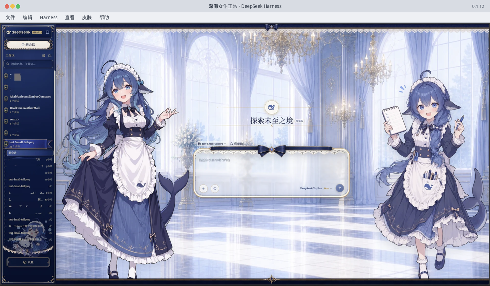
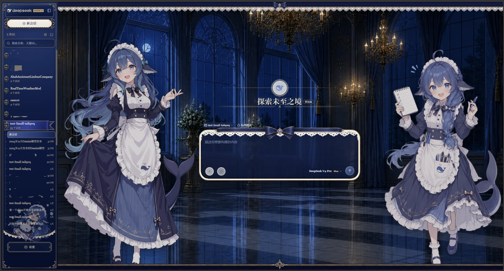
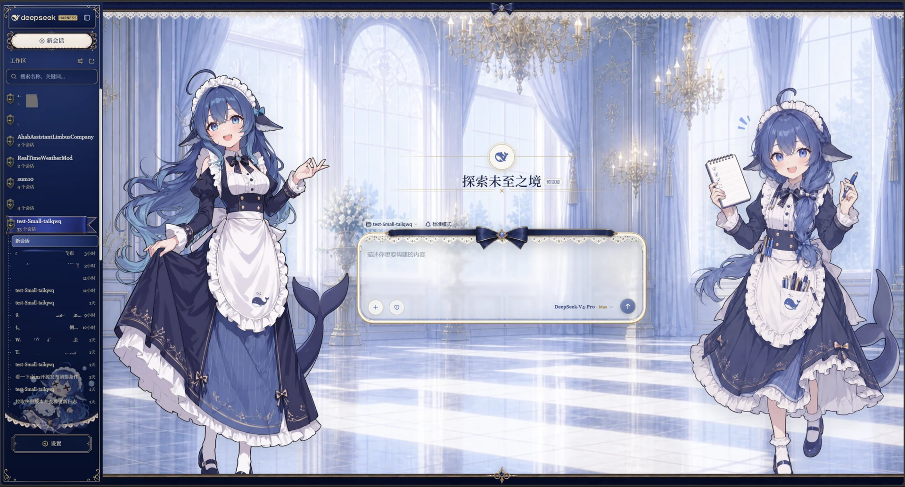

官方 npm 引擎
运行时安装 @deepseek-ai/dsh，Harness 功能仍来自官方包。
COMMUNITY DESKTOP · 0.2.2
DeepSeek Harness Desktop 是朱泉制作的社区 Electron 桌面端，不是聊天网站，也不是 DeepSeek 公司发布的软件。 下载、打开，官方 Harness 就在独立窗口里运行。
可按你的电脑系统切换安装包。
首次启动需联网准备 Node 和官方引擎，通常 1–3 分钟。

运行时安装 @deepseek-ai/dsh，Harness 功能仍来自官方包。
不做官方 monorepo 的镜像或 fork；更新引擎不必等桌面版重发。
Windows、Linux、Apple Silicon 与 Intel Mac 都有 0.2.2 安装包。
默认皮肤已内置；升级时会尽量接回旧目录里的 API Key。
BUNDLED SKIN


内置成品 · 无需另去 GitHub 下载这套画面不是桌面端作者绘制。安装包只内置皮肤成品，并保留完整署名。 可在应用内关闭皮肤中心或导入其他皮肤。
CC BY-NC-SA 4.0 · 禁止商用
衍生作品需署名并以相同方式共享。脚手架：
dsh-web-ui。
DOWNLOADS · 0.2.2
蓝框是为这台设备推荐的选择，其他系统仍可直接下载。
x64 · exe
安装后创建桌面和开始菜单快捷方式。便携版快捷方式指向 exe 本身，关掉后仍然有效。SmartScreen 提示时选「更多信息 → 仍要运行」。
下载 .exe ↘x64 · tar.gz / deb / rpm
便携使用选 tar.gz；Debian / Ubuntu 可选 deb，Fedora / openSUSE 可选 rpm。优先这三种格式。AppImage 需要 libfuse2，Ubuntu 24.04 请不要双击它。
Apple Silicon / Intel
把 App 拖进「应用程序」。未公证版本若被隔离，请看 Gatekeeper 说明。
macOS 提示「已损坏」？FAQ
不是。它是作者朱泉制作的社区 Electron 桌面端；底层 Harness 引擎来自官方 npm 包 @deepseek-ai/dsh，项目与 DeepSeek Inc. 无隶属关系。
桌面壳会准备 Node，并从 npm 安装官方引擎，通常需要 1–3 分钟和可用网络。没网过不去。0.2.0 失败后可点「重试」，并清掉半成品。之后可在菜单里单独检查 Harness 更新。
当前安装包没有 Apple 公证，会被 Gatekeeper 隔离。拖进「应用程序」后运行 xattr -cr /Applications/DeepSeek.app；查看逐步说明。
0.2.0 会尽量从旧 Electron 目录和 ~/.dsh 迁移密钥，不覆盖当前已有配置。「深海女仆工坊」已打进安装包。0.1.13 升级后若皮肤消失、只能从 GitHub 再拉，请改用 0.2.0，不必再去 GitHub 下载。
0.1.13 / 0.1.14 的进度按 10% 一跳，188 MB 的 Windows 安装包会长时间停在 0%；主进程下载还不走 Windows 系统代理，所以能弹出「发现新版本」也不代表安装包下得下来。请用浏览器打开本页或 dsh.zhuquan.xyz/dl/ 下载 0.2.2。从 0.1.15 起会按 1% / 1 MB 刷新；0.1.16 起安装包走本域名，卡住会提示打开本页。
请用 tar.gz 或 deb，不要用 AppImage（Ubuntu 24.04 常缺 libfuse2，双击没有窗口）。0.2.0 不再依赖系统 xz；失败会清掉半成品并可以重试。若日志出现 node-gyp / make / g++，先安装 sudo apt install build-essential python3。macOS 对应 xcode-select --install，Windows 需要 Visual Studio Build Tools。
Windows 安装包大约 180 MB，超过 GitHub Pages 单文件 100 MB 限制，不能提交进网站仓库。文件仍发布在 GitHub Release，再通过 https://dsh.zhuquan.xyz/dl/ 用本域名分发，软件内更新也优先走这条地址。
署名链是上善 → ZipZipPipe → Small-tailqwq。皮肤采用 CC BY-NC-SA 4.0，禁止商用；完整链接和说明见本页皮肤区。